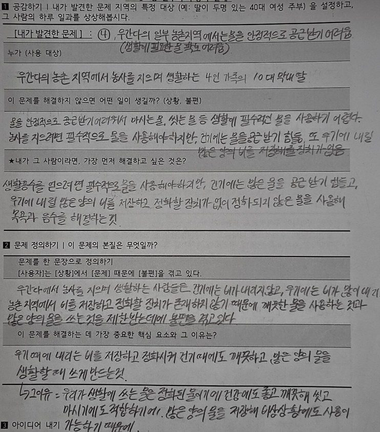
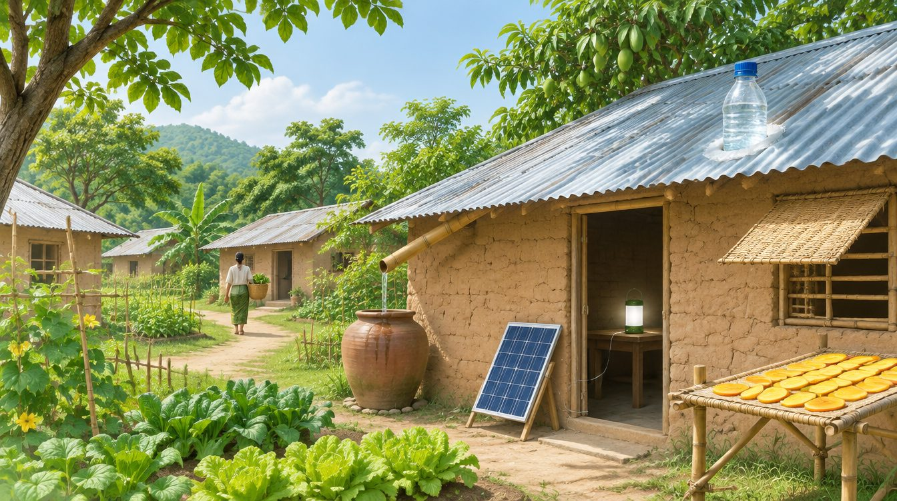
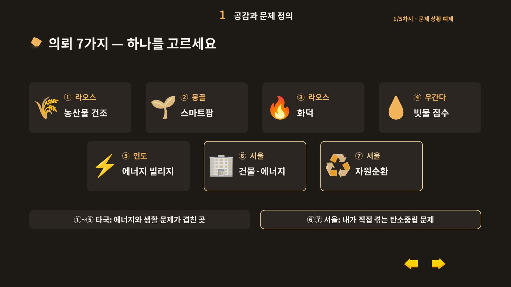
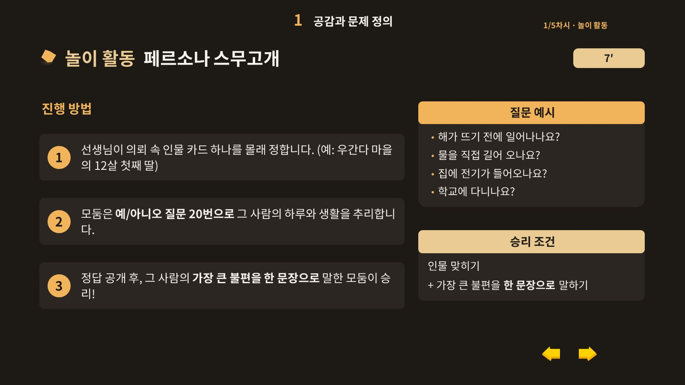
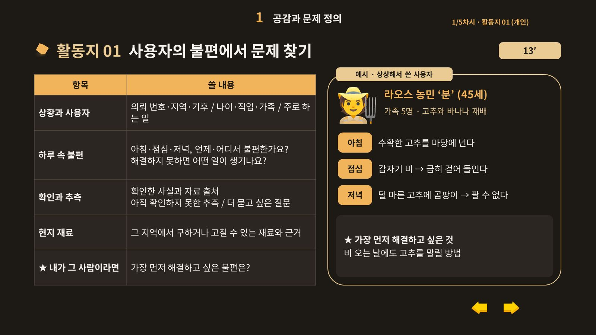
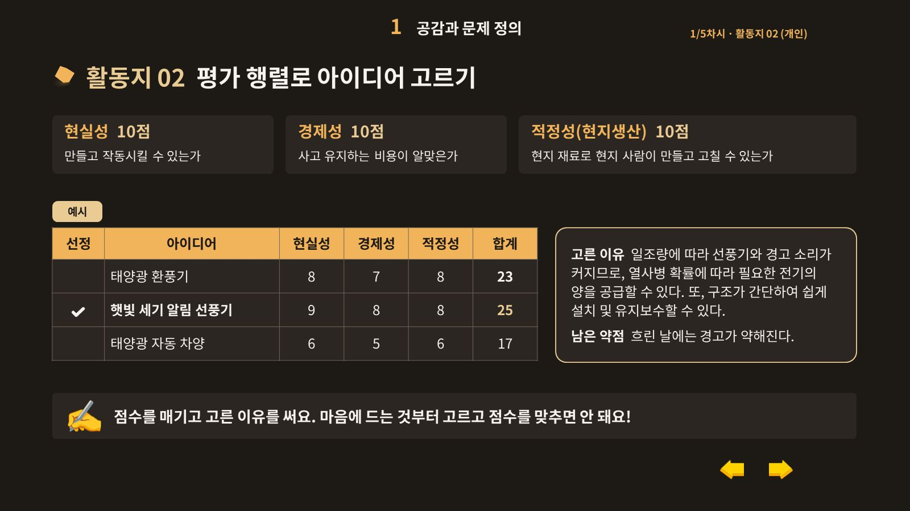
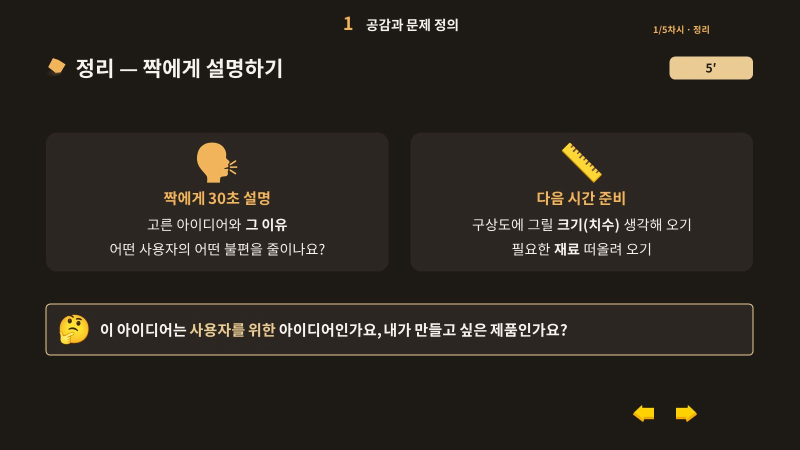

그 사람이 가장 먼저 해결하고 싶은 불편은?
오늘의 목표공학적 문제해결 사례에서 창의성·팀워크·의사소통이 왜 필요한지 찾고, 사용자의 가장 큰 불편을 한 문장으로 정의해 아이디어를 두 가지 이상 구상해요.

수업 흐름
← → 키로 단계를 넘겨요. 교사 모드를 켜면 지도안의 발문과 유의점이 함께 보여요.
적정기술, 누구를 위한 기술일까?
아이들이 놀이기구를 돌리면 물이 퍼 올려지도록 만든 놀이기구 물 펌프가 있었어요. 실제로는 물을 얻으려면 쉬지 않고 돌려야 했고, 고장 나도 고칠 부품과 사람이 없어 멈춘 곳이 많았어요.
왜 멈췄을까요? 좋은 적정기술의 3가지 조건

오늘의 질문
그 사람이 가장 먼저 해결하고 싶은 불편은 무엇일까?
- 공학적 문제해결 사례에서 공학적 소양(창의성·팀워크·의사소통)의 필요성을 찾을 수 있다.
- 적정기술이 필요한 사용자의 가장 큰 불편을 한 문장으로 정의하여 아이디어를 구상할 수 있다.
오늘의 활동: 문제해결 사례 → 공감하기 → 문제 정의와 아이디어

페트병 전구가 태양전지 조명이 되기까지
그림: 연구회가 수업 설명용으로 직접 그림(실제 제품의 구조를 단순화).
이 문제를 해결하려면 무엇이 필요했을까?
의뢰 7가지 — 하나를 골라요
①~⑤ 타국: 에너지와 생활 문제가 겹친 곳 · ⑥⑦ 서울: 내가 직접 겪는 탄소중립 문제

해결책 문장 vs 불편 문장
농민에게 정말 필요한 건 건조기일까요, 비 오는 날에도 농산물을 말릴 방법일까요?
점수 0 / 0
페르소나 스무고개
- 선생님이 의뢰 속 인물 카드 하나를 몰래 정해요. (예: 우간다 마을의 12살 첫째 딸)
- 모둠은 예/아니오 질문 20번으로 그 사람의 하루와 생활을 추리해요.
- 정답 공개 후, 그 사람의 가장 큰 불편을 한 문장으로 말한 모둠이 승리!

그 사람의 하루를 상상해요
의뢰 하나를 골라 특정 대상(예: 딸이 두 명 있는 40대 주부, 고아학교에서 밥을 짓는 조리사)을 정하고, 아침·점심·저녁의 불편을 써요.
| 예시 · 상상해서 쓴 사용자 — 라오스 농민 ‘분’(45세), 가족 5명, 고추와 바나나 재배 | |
|---|---|
| 아침 | 수확한 고추를 마당에 넌다 |
| 점심 | 갑자기 비 → 급히 걷어 들인다 |
| 저녁 | 덜 마른 고추에 곰팡이 → 팔 수 없다 |
| ★ | 가장 먼저 해결하고 싶은 것: 비 오는 날에도 고추를 말릴 방법 |
디벗 약속: AI에게 “답 알려줘” 하지 않기 · 참고했다면 사실인지 확인하고 출처 남기기 · 확인한 사실과 상상한 추측을 구분하기

문제를 한 문장으로 정의하기
제품 이름이나 해결책은 넣지 않고, 가장 큰 불편 하나에 집중해요.

“어떻게 하면 ~할 수 있을까?”
같은 불편을 줄일 서로 다른 방법 두 가지 이상을 구상해요.
예시 2는 위험을 알리는 보조 장치예요. 열사병 위험은 햇빛보다 기온과 습도에 크게 좌우돼요.

짝에게 30초 설명
고른 아이디어와 그 이유 — 어떤 사용자의 어떤 불편을 줄이나요?
이 아이디어는 사용자를 위한 아이디어인가요, 내가 만들고 싶은 제품인가요?
다음 시간 준비: 구상도에 그릴 크기(치수), 필요한 재료 떠올려 오기

활동지
활동지 01 · 02 — 불편에서 문제로, 문제에서 아이디어로
쓴 내용은 이 기기의 브라우저에만 저장돼요. 제출은 종이 활동지로 해요.
1상황과 사용자
고른 의뢰는 위 수업 화면에서 정해요.
2하루 속 불편
3확인과 추측
4현지 재료
5문제 정의 한 문장 만들기
활동지 02 · 아이디어 구상과 평가 행렬
같은 불편을 줄일 서로 다른 방법을 두 가지 이상 쓰고, 각 기준을 0~10점으로 매겨요. 합계와 선정 후보가 바로 바뀌어요.
현실성 만들고 작동시킬 수 있는가 · 경제성 사고 유지하는 비용이 알맞은가 · 적정성(현지생산) 현지 재료로 현지 사람이 만들고 고칠 수 있는가
이 차시 슬라이드
PPT 8장(페트병 전구 사례)은 제3자 사진이 들어 있어 이 화면에서는 빼고, 수업 진행 3단계의 직접 그린 그림으로 대신했어요.
나가기 질문
고른 아이디어는 어떤 사용자의 어떤 불편을 줄이나요? 짝에게 30초로 설명한 내용을 한두 문장으로 남겨요.